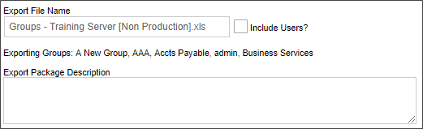
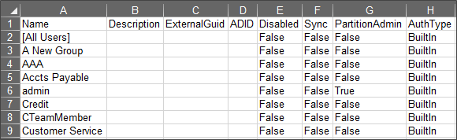

Inside the Process Director System Administration, click on the Create Group hotlink in the Groups section under the User Administration tab. This will prompt you to enter a name for the new group.

Inside the Process Director System Administration, click on the Create Group hotlink in the Groups section under the User Administration tab. This will prompt you to enter a name for the new group.
The previous step adds the new group to the Groups list in the System Administration. To add users to this group, click on the Edit hotlink of the group to configure. Select the Assign Users button.

A User Selector window will appear. Select the users that you want to add to the group on the left user’s pane, and click on the arrow that point to the right to add the selected users to the right users pane. To remove a user from a group, select the users from the right pane and click on the arrow that points to the left.

Built-in Groups can be exported between systems using Excel files. To export groups, select one or more groups from the Group List, then click on the Export Groups action link. An export box will appear that enables you to specify the name of the Excel file to which the list of selected users will be exported. A default name will be provided, but you can edit the default, at your discretion.

Once exported, the groups will be saved to an Excel Spreadsheet.

The spreadsheet containing the exported groups can be imported into another system, using the Import Groups action link.
An additional export property, Include Users?, will use the User Export feature to export the users and groups together. In that case, the output will use the Export Users feature to export both users and groups in one spreadsheet. Importing that file into another system will import both the users and groups in one import via the Import Users link on the User Administration page, rather than the Import Groups link on the Group Administration page.